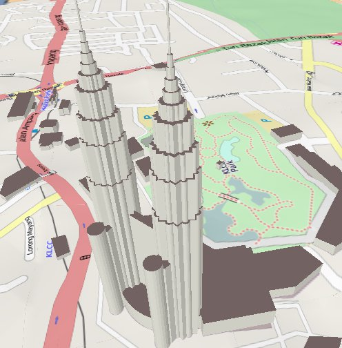

Master class OL3
Florent Gravin
florent.gravin@camptocamp.com
 @fgravin
@fgravin
 @fgravin
@fgravin
Contenu
- Présentation générale d'OL3
- Description de l'API et exercices élémentaires
- Développement d'une application
- Conclusion
License

Documents mis à disposition selon les termes de la license Creative Commons Attribution-ShareAlike 3.0 Unported License.
Présentation générale d'OL3
Commençons par une démo !
Liens
Vision OL3
→ Où veut-on aller avec OL3 ?
2D et 3D
2D et 3D
Un des objectifs : afficher des données 3D de type "bâtiment" et "terrain".Vecteur
Des millions ?!

Vecteur
Objectif : afficher des vecteurs "complexes", autant au niveau des styles que des nombres d'objets à afficher.Cartes = Graphiques

Cartes = Graphiques
Objectif : afficher des données 2D et 3D complexes avec de bonnes performances.
Utilisation de Canvas et WebGL.
"Mais d'autres libs sont déja disponibles, non ?"
→ Où se situe OL3 ?
Où ?
OpenLayers 2

OL3
→ OL3 doit savoir faire beaucoup de choses !
→ Un projet ambitieux, pour des cartes ambitieuses
API,
et exemples
ol.Map / ol.View
var view = new ol.View({
center: [0, 0],
zoom: 0
});
var map = new ol.Map({
target: 'map',
layers: [layer],
view: view
});
ol.layer / ol.source
var osm = new ol.layer.Tile({
source: new ol.source.OSM()
});
var bing = new ol.layer.Tile({
source: new ol.source.BingMaps({
// your key here
key: 'AlQLZ0-5yk301_ESrmN...',
imagerySet: 'AerialWithLabels'
})
}));
var mapbox = new ol.layer.Tile({
source: new ol.source.TileJSON({
url: '//api.tiles.mapbox.com/v3/mapbox.world-dark.jsonp'
})
});
ol.interaction
ol.interaction.DragPanol.interaction.DoubleClickZoomol.interaction.KeyboardPanol.interaction.PinchZoom// etc.
ol.control
ol.control.Zoomol.control.ScaleLineol.control.MousePositionol.control.Attribution// etc.
Exemple interaction et control
Pas de popups !?!
ol.Overlay
var marker = new ol.Overlay({
position: buriedTreasure,
element: document.createTextElement('X marks the spot')
});
map.addOverlay(marker);
ol.Overlay
var el = document.getElementById('popup');
var popup = new ol.Overlay({
element: el
});
map.addOverlay(popup);
map.on('click', function(evt) {
$(el).popover({
'placement': 'top',
'html': true,
'content': 'Roll your own popup!'
});
$(el).popover('show');
popup.setPosition(evt.getCoordinate());
});
ol.animation
function fly(map, home, duration) {
var view = map.getView().getView2D();
var start = +new Date();
var pan = ol.animation.pan({
duration: duration,
source: view.getCenter(),
start: start
});
var bounce = ol.animation.bounce({
duration: duration,
resolution: 4 * view.getResolution(),
start: start
});
map.beforeRender(pan, bounce);
view.setCenter(home);
}
ol.layer.Vector
var vector = new ol.layer.Vector({
source: new ol.source.Vector(),
style: new ol.style.Style({
fill: new ol.style.Fill({
color: 'rgba(255,255,255,0.2)'
}),
stroke: new ol.style.Stroke({
color: '#bada55',
width: 2
})
})
});
Un mot sur la compilation
Hein ? Oui oui.
 Closure Compiler
Closure Compiler
- Renommage des variables
- Elimination du code non utilisé
- Applatissage des propriétés
- Dévirtualisation des méthodes
- "Inlining"
CC - un exemple
goog.provide('ANamespace.ASubNamespace.AClass');
ANamespace.ASubNamespace.AClass = function() {
this.aProperty = 'prop1';
};
ANamespace.ASubNamespace.AClass.prototype.aMethod =
function() {
this.aProperty = 'change';
};
var anInstance = new ANamespace.ASubNamespace.AClass();
anInstance.aMethod();
window.b=new function(){this.a="prop1"};window.b.a="change";
État actuel
- v3.0.0-beta2 disponible
- API stable / en cours de stabilisation
- v3.0.0 sortira prochainement
Contenu (rappel)
- Présentation générale d'OL3
- Description de l'API et exercices élémentaires
- Développement d'une application
- Conclusion
API, et exercices élémentaires
Logiciels requis
- Éditeur de texte
- Serveur web (Apache)
- Navigateur web (FireFox ou Chrome)
Ou utiliser http://jsfiddle.net
Ressources
- Doc de l'API : http://ol3js.org/en/master/apidoc/
- Exemples : http://ol3js.org/en/master/examples/
Les objets de base
ol.Mapol.Viewol.layer.* (ol.layer.Tile)ol.control.* (ol.control.Attribution)ol.interaction.* (ol.interaction.DragPan)
Exemple de base
Disponible ici: http://erilem.net/master-class-ol3/exercices/exercices-elementaires.html.
Maintenant, à vos cahiers d'exercices !
Contenu (rappel)
- Présentation générale d'OL3
- Description de l'API et exercices élémentaires
- Développement d'une application
- Conclusion
Dév application
Quelques mots sur l'application
- Simple
- Construite par étape
- Plein écran
- Adaptée au mobile
- Services OGC WMS
- Lambert93 (utilisation de proj4js)
- Un peu de DOM avec jQuery
Les nouveaux objets
ol.source.TileWMSol.source.ImageWMSol.layer.Imageol.Geolocationol.animation.*